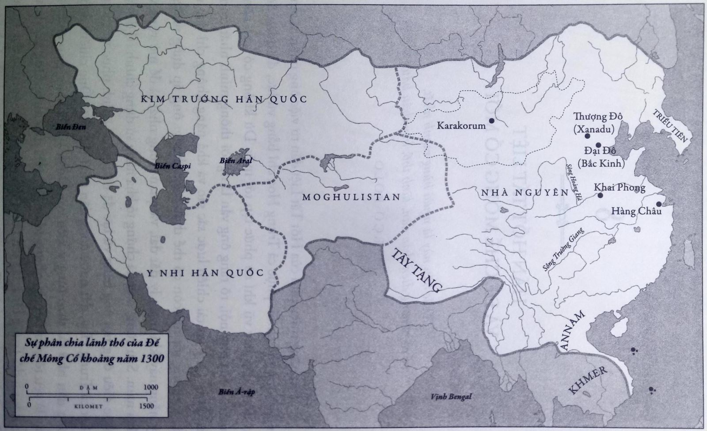

Châu Á đang nuốt chửng chúng ta.
Mặt quân Tartar bủa vây ta khắp mọi hướng.
THOMAS MANN,
Núi thần

HÃN HỐT TẤT LIỆT VÀ ĐẾ CHẾ MÔNG CỔ MỚI
Vị Khắc hãn này là người hùng mạnh nhất, về cả phương diện thần dân, lãnh thổ, hay châu báu.
MARCO POLO
TÀI NĂNG THIÊN PHÚ của Hốt Tất Liệt đến từ việc ông nhận ra rằng ông không thể chinh phục cả Trung Hoa chỉ bằng vũ lực, dù quân đội có đông đảo hay vũ khí có phức tạp tới mấy. Dù không có khả năng quân sự của ông nội, rõ ràng ông vẫn là người thông minh nhất trong gia đình. Ông có tài chiến lược sắc sảo và khả năng không chỉ đưa ra các ý tưởng tốt mà còn có thể thực hiện chúng; ông áp dụng những kỹ năng này khi quản lý đất đai, và quan trọng nhất là để mở rộng về phía nam. Sau cùng, ông đã chứng tỏ khả năng sử dụng chính trị để đạt được điều ông nội ông bằng vũ lực đã thất bại – chinh phục và thống nhất cả Trung Hoa, đất nước đông dân nhất thế giới. Ông chiếm được lòng dân nhờ tài thao túng ý kiến công luận – khả năng giao chiến ở đây là yếu tố quan trọng, nhưng không phải là duy nhất. Ông xây dựng một kinh đô Trung Hoa, lấy tên tiếng Trung, tạo ra một triều đại Trung Hoa và bộ máy quan lại Trung Hoa. Ông giành được quyền kiểm soát Trung Hoa bằng cách làm ra vẻ Trung Hoa hơn cả người Trung, hay ít nhất là hơn nhà Tống.
Xuyên suốt phần lớn lịch sử, Trung Hoa là một nền văn minh lớn nhưng không phải một quốc gia thống nhất. Trong khi tầng lớp quý tộc có học thức sử dụng cùng một ngôn ngữ viết, văn tự kinh điển, phong cách nghệ thuật, và các hình thức văn hóa cao khác, dân thường nói rất nhiều thứ tiếng hoàn toàn khác, biên giới quốc gia liên tục thay đổi, các triều đại và hoàng tộc chỉ mang tính tạm thời. Giới quý tộc có học thức mãi mơ về giấc mộng thống nhất đất nước, với chỉ một triều đình duy nhất cai trị toàn dân. Thỉnh thoảng một nhà lãnh đạo hay một gia tộc sẽ thống nhất vài vùng đất, và lại một lần nữa mang tới niềm hi vọng biến giấc mơ về một Trung Hoa duy nhất thành hiện thực. Giữa những giai đoạn thống nhất ngắn ngủi này, khái niệm quốc gia Trung Hoa chỉ là một hình ảnh lý tưởng hay lãng mạn trong thơ ca, thư pháp, và văn tự của giới học giả nước này.
Hốt Tất Liệt là nhà cai trị đầu tiên cho giới học thức ở đây cơ hội hiện thực hóa giấc mơ này. Dù xuất thân hèn kém là kẻ mọi rợ trên thảo nguyên, so với nhà Tống ông có khả năng hơn trong việc biến giấc mơ lâu đời này thành hiện thực. Mọi thứ ông làm đều đã được tính toán để thuyết phục người Trung Hoa rằng ông chắc chắn là người duy nhất được ban cho Thiên Mệnh này, và chẳng mấy chốc triều đại Tống già cỗi sẽ sụp đổ vì thiếu sức sống cần thiết.
Dường như Hốt Tất Liệt cũng nhận ra rằng ông cũng phải đối mặt với những vấn đề mà ông nội ông đã gặp phải khi thống nhất các bộ lạc trên thảo nguyên: làm thế nào để biến một nhóm rất đông người khác biệt thành một thể chính trị đơn nhất. Nếu Thành Cát Tư Hãn gặp vấn đề này với các bộ lạc ít hơn một trăm ngàn người, Thành Cát Tư Hãn lại phải đối diện với nhiều quốc gia hàng triệu dân. Như Thành Cát Tư Hãn hai thế hệ trước, Hốt Tất Liệt bắt đầu quá trình gian truân xây dựng đất nước với chung một bản sắc dân tộc cốt lõi – nhưng ở đây là bản sắc Trung Hoa, không phải Mông Cổ. Ông phải được người Trung Hoa tín nhiệm, và phải tái thiết, hay có lúc là thiết lập, những tổ chức mới để hợp nhất những tộc người khác nhau này thành một khối có khả năng hoạt động tốt.
Khi còn tranh đấu với A Lý Bất Ca năm 1260, Hốt Tất Liệt đã chọn cho mình một tước vị tiếng Trung dịch từ tiếng Mông Cổ, nhưng năm 1264, ông thay đổi tước hiệu của mình thành Chí Nguyên, có nghĩa là “khởi đầu hoàn toàn,” và tới năm 1271, tên gọi này là cơ sở của tên triều đại Đại Nguyên, nghĩa là “nguồn gốc vĩ đại” hay “khởi đầu lớn.” Đây sau này trở thành tên gọi chính thức của triều Mông Cổ trong lịch sử Trung Hoa. Tên gọi mới này không chỉ mang ý nghĩa là một khởi đầu mới cho người dân Trung Hoa của ông, mà cũng đánh dấu sự bắt đầu mới cho người Mông Cổ. Hốt Tất Liệt không phải Thành Cát Tư Hãn, nhưng ông đã dấn thân vào một nhiệm vụ không kém phần trắc trở.
Là hoàng đế và người thành lập một triều đại mới, Hốt Tất Liệt tìm cách “Trung hóa” hình ảnh của mình để dân Trung Hoa không chỉ chấp nhận nó mà còn thấy bị thu hút. Năm 1263, Hốt Tất Liệt cho xây đền tổ gia đình. Ông ra lệnh cho các quan thực hiện các nghi lễ thờ tổ tiên truyền thống của Trung Hoa, nhưng có lẽ bởi người Mông Cổ thường tránh những việc liên quan tới cái chết, bản thân ông không tham dự những nghi lễ này. Năm sau đó, ông cho dựng nhiều bài vị thờ tổ tiên kiểu Trung Hoa. Năm 1277, sau khi tuyên bố thành lập triều đại Nguyên Mông, ông ban tên tiếng Trung cho các tổ tiên và xây một ngôi đền lớn hơn với tám điện: một cho những người khai sinh gia tộc Dã Tốc Cai và Ha Nguyệt Luân, một cho Thành Cát Tư Hãn, bốn cho bốn con trai của Thành Cát Tư Hãn, và hai cho Quý Do và Mông Kha. Trong phiên bản gia phả chính thức mới, Truật Xích được công nhận là thành viên hợp pháp của gia đình, bởi gia tộc ông là đồng minh trung thành nhất của gia tộc Hốt Tất Liệt. Cũng như khi Mông Kha ban tước vị Khắc hãn cho cha mình, Đà Lôi, sau khi ông mất, Hốt Tất Liệt cũng ban cho ông tước vị hoàng đế Trung Hoa. Ông ra lệnh cho vẽ chân dung của tất cả theo phong cách Trung Hoa, để họ trông giống các hiền triết người Hoa hơn là chiến binh Mông Cổ.
Hốt Tất Liệt hiểu được sự hữu ích của một quân đội hùng mạnh và tuyên truyền tốt, song yếu tố thứ ba trong chiến lược của ông là chính sách và chế độ quản lý tốt. Thay vì chỉ tuân theo đạo lý Khổng giáo, vốn chỉ thu hút được tầng lớp quý tộc Trung Hoa chứ không mấy quan trọng với thường dân, ông tìm cách thiết lập một hệ thống bộ máy quan lại hiệu quả để giúp thu phục được lòng dân và khiến họ không để ý tới gốc gác ngoại lai của ông. Để đạt được mục tiêu này, ông đặt ra chức Quan Hòa giải để khôi phục quan hệ hòa hữu với người Hán ở vùng lãnh thổ mới chiếm được. Các quan này bắt đầu nhiệm vụ bằng việc khắc phục hậu quả chiến tranh và các toà nhà có ý nghĩa về mặt cảm xúc hay biểu tượng với dân chúng nhưng trước đó đã bị bỏ bê như đền hay miếu.
Để ra vẻ là một vị vua Trung Hoa quyền lực, Hốt Tất Liệt cần một triều đình lộng lẫy ở một thành phố thực sự, không phải một cái lều di động hay các toà nhà đặc biệt ở Thượng Đô thuộc Nội Mông ngày nay. Nơi này có ý nghĩa đặc biệt quan trọng với ông bởi ông lần đầu được phong làm Khắc hãn ở buổi hốt lý đài tổ chức ở đây, nhưng nó không có lợi thế rõ ràng nào cả. Kinh đô này không chỉ ở nơi ở của dân du mục, vốn bị người Trung Hoa coi là xa lạ và hèn kém, nó còn là nơi ông nội ông thường dừng chân trong các cuộc tấn công và cướp bóc các thành phố Trung Hoa. Hốt Tất Liệt cố gắng tách rời khỏi phần lịch sử không ai muốn nhắc tới đó.
Thượng Đô trở thành nơi ở mùa hè và nơi săn bắn, còn ông cho xây dựng một thành phố khác, một kinh đô theo phong cách Trung Hoa thật sự ở phía nam để dễ dàng tận dụng tài nguyên nông nghiệp của khu vực ven sông Hoàng Hà. Ông chọn cố đô Trung Đô của người Nữ Chân mà Thành Cát Tư Hãn đã chinh phục năm 1215 – năm Hốt Tất Liệt ra đời. Năm 1272, Hốt Tất Liệt ra lệnh cho xây thành, và xây dựng kênh rạch nối kinh đô mới với sông Hoàng Hà. Người Mông Cổ gọi đây là Khanbalik – thành phố của vị Hãn, còn người Trung Hoa gọi kinh đô là Đại Đô, và nó sau này trở thành thủ đô Bắc Kinh hiện đại. Hốt Tất Liệt cho các kiến trúc sư Hồi giáo và nghệ nhân Trung Á thiết kế thành theo phong cách mới để dung hòa thị hiếu của dân du mục thảo nguyên và nền văn minh định cư.
Đối lập với mê cung ngõ hẻm chằng chịt ở phần lớn các thành phố Trung Hoa thời đó, kinh đô của Hốt Tất Liệt có nhiều đường phố rộng, thẳng chạy theo trục bắc nam và các tuyến phố đông – tây vuông góc; lính gác từ một cổng thành có thể nhìn xuyên qua thành phố tới lính gác ở cổng đối diện. Từ cung điện, họ xây dựng đại lộ, phù hợp với ngựa và vũ khí quân sự của Mông Cổ hơn là xe cút kít hay xe kéo bằng tay của dân lao động Trung Hoa. Các đại lộ rộng tới mức chín người có thể phi ngựa cùng hàng với nhau xuyên kinh thành, trong trường hợp dân chúng nổi lên chống lại triều đình ngoại quốc này.
Nhằm tiếp tục thu lợi từ giao thương với bên ngoài, Hãn Hốt Tất Liệt dành riêng một vài phần trong kinh thành cho người Trung Đông và Mông Cổ, cũng như người dân từ các vùng thuộc Trung Hoa ngày nay. Kinh thành cũng là nơi ở của các lái buôn từ những nơi xa xôi như Ý, Ấn Độ hay Bắc Phi. Như Marco Polo đã miêu tả rất chi tiết, nơi nào có nhiều đàn ông sinh sống, cũng sẽ có rất nhiều gái điếm sống tụ tập ở một khu riêng để phục vụ họ. Các học giả và thầy thuốc tới từ Trung Đông để hành nghề. Người Công giáo La Mã, Cảnh giáo, và Phật giáo cùng chung sống với những tín đồ Đạo giáo và Khổng giáo vốn đã ở Trung Hoa. Các giáo sĩ Hồi giáo, bí sử Ấn Độ, và ở vài phần thuộc lãnh thổ Mông Cổ, các giáo sĩ Do Thái cũng góp phần vào hỗn hợp dân chúng và tín ngưỡng trên khắp đế quốc. Kinh đô này lớn hơn Karakorum rất nhiều, nhưng cũng vẫn có những nguyên lý quốc tế như vậy – đây chính là một kinh đô toàn cầu đích thực, và cũng xứng đáng làm kinh đô của thế giới.
Nhưng cuối cùng, ở trung tâm thành phố, Hốt Tất Liệt cho xây một nơi dành riêng cho người Mông Cổ – không mấy người ngoại quốc, kể cả người Trung Hoa, có thể bước chân vào đây. Đằng sau những bức tường cao được binh lính Mông Cổ canh gác, hoàng tộc và triều đình vẫn sống như người Mông Cổ. Khoảnh đất trống rộng rãi cho động vật ngay giữa thành phố là điều chưa từng có trong văn hóa Trung Hoa. Tử Cấm Thành này là một thảo nguyên thu nhỏ ở ngay giữa kinh đô Nguyên Mông. Trong thời nhà Nguyên, có rất nhiều ger nằm trong toàn bộ Tử Cấm Thành, bởi các quan lại triều đình thích sống và ăn ngủ ở đây. Các hậu và thiếp của hãn đảm bảo rằng con cái họ sinh ra và học tập trong ger. Dù Hốt Tất Liệt và các người kế vị bên ngoài thì sống như các hoàng đế Trung Hoa, đằng sau bức tường Tử Cấm Thành, họ vẫn tiếp tục sống như người Mông Cổ trên thảo nguyên.
Khi thầy tu dòng Phan Sinh Odoric xứ Pordenone tới thăm Mông Cổ vào những năm 1320, ông miêu tả Tử Cấm Thành ở Khanbalik như sau: “Bên trong khuôn viên cung điện hoàng gia là một ngọn núi tuyệt đẹp, cây cối mọc um tùm. Bởi vậy nó được gọi là Thanh Sơn. Cung điện xa hoa và lộng lẫy nhất được xây ở đây, nơi phần lớn thời gian vị Hãn sống.” Trong một đoạn văn khá giống lời miêu tả Karakorum ngày trước, ông viết rằng: “Bên một bên núi là một cái hồ lớn với một cây cầu trang nghiêm. Trong hồ có rất nhiều ngỗng, vịt và đủ loại chim nước; và trong khu rừng trên núi là một kho tàng chim chóc và thú hoang.”
Cung điện gỗ mà Hãn Hốt Tất Liệt xây dựng và cung điện ở Karakorum dường như có cùng cấu trúc cơ bản. Hãn Hốt Tất Liệt cho đặt những con công máy trong cung điện; chúng có thể xòe đuôi và kêu giống như thiên thần của Guillaume Boucher trên Cây Bạc trong cung Điện ở Karakorum. Hốt Tất Liệt có lẽ đã mang cái Cây Bạc lộng lẫy từ cung điện của Karakorum, và đặt một phần của nó ở Khanbalik. Như Marco Polo đã miêu tả, “trong đại sảnh, gần bàn làm việc của Khắc hãn, có một món đồ lớn tuyệt đẹp có hình một cái két hay tủ hình vuông, mỗi cạnh dài chừng ba bước, và được trang trí lộng lẫy với hình thú vật được chạm trổ tinh xảo và mạ vàng.” Cách thức hoạt động bên trong cũng tương tự Cây Bạc: “Nó rỗng ở giữa, và bên trong có một bình chứa vàng nguyên chất… và ở mỗi góc bình là một bình khác cùng cỡ, và từ trong cái bình đầu tiên rượu hay thức uống tẩm hương liệu quý hiếm được đổ vào các bình khác.”
Đằng sau ranh giới Tử Cấm Thành, Hốt Tất Liệt và gia đình tiếp tục sống như người Mông Cổ về mặt phục trang, ăn nói, thể thao, và giải trí. Điều này có nghĩa là họ uống rất nhiều rượu, húp canh ồn ào, và cắt thịt bằng dao tại bàn ăn – điều người Trung Hoa cho là ghê tởm, bởi họ cho hành vi đó chỉ được làm trong bếp lúc chuẩn bị món ăn. Khi rượu chè và việc uống rượu cũng như say xỉn quan trọng như vậy, cảnh tượng ở triều đình hẳn phải khá hỗn loạn khi các quan lại Mông Cổ tự do và theo chủ nghĩa cá nhân cố bắt chước các lễ nghi phức tạp, được sắp xếp tỉ mỉ của triều đình Trung Hoa. Trái ngược với truyền thống yêu cầu các quan lại phải xếp hàng theo cấp bậc, người Mông Cổ thường đứng không theo thứ tự, và phụ nữ cùng tham gia với đàn ông kể cả trong những dịp quan trọng nhất – điều có lẽ khiến người Trung Hoa khó chịu nhất. Các buổi lễ trong triều đình Nguyên Mông thiếu tổ chức tới mức thỉnh thoảng hộ vệ của Khắc hãn phải dùng gậy trấn áp đám đông quan lại và khách khứa.
Giống ông nội mình, Hốt Tất Liệt hiểu được tầm quan trọng của việc đặt ra một bộ luật rõ ràng và chắc chắn để làm nòng cốt cho việc cai trị. Việc xây dựng và thực thi luật mới là cách truyền thống để các thủ lĩnh bộ lạc Mông Cổ, cũng như vua chúa Trung Hoa, chứng tỏ uy quyền trong mắt dân chúng. Khi làm ra bộ luật, Hốt Tất Liệt không thay thế hoàn toàn luật Trung Hoa bằng luật Mông Cổ, mà cải tiến để chúng tương thích với luật của Thành Cát Tư Hãn theo cách để chúng vẫn được cả người dân Mông Cổ và Trung Hoa ủng hộ. Luật lệ là một vũ khí nữa trong cuộc chiến giành lòng trung thành và ủng hộ từ dân chúng, và sau cùng là thắng lợi trước nhà Tống.
Triều Hãn Hốt Tất Liệt bảo đảm quyền với tài sản của địa chủ, giảm thuế, cũng như cải thiện đường sá và giao thông. Để tiếp tục thu phục lòng dân, nhà Nguyên giảm bớt luật trừng phạt nặng nề của nhà Tống. Số tội có thể chịu án tử hình giảm gần một nửa: từ 233 xuống 133, và ngay cả khi đó, Hốt Tất Liệt cũng hiếm khi cho phép áp dụng án tử hình. Suốt ba mươi tư năm ông trị vì, chỉ trừ bốn năm, luôn có ghi chép đầy đủ về các vụ tử hình. Nhiều nhất là 278 vụ vào năm 1283. ít nhất là 7 vụ vào năm 1263, nhưng có thể lý do của việc thiếu số liệu của bốn năm là vì trong bốn năm đó không có vụ tử hình nào. Tổng lại, chưa tới 2.300 tù nhân bị xử chết trong hơn ba thập niên Hốt Tất Liệt cai trị. Số vụ tử hình hằng năm thời ông ít hơn nhiều số vụ tử hình ở các quốc gia hiện đại như Trung Hoa hay Hoa Kỳ.
Nhìn chung, hệ thống luật lệ và hình phạt của ông vừa thống nhất, vừa khoan hồng và nhân đạo hơn nhà Tống. Khi nào có thể, ông phạt tiền thay vì dùng hình, và đặt ra thủ tục để miễn tội cho tù nhân hối cải. Tương tự, quan lại Mông Cổ nỗ lực xóa bỏ, hay ít nhất là cắt giảm, việc áp dụng nhục hình. Luật lệ Mông Cổ định ra rằng trước khi dùng hình để lấy cung, quan lại phải có bằng chứng cụ thể chứ không chỉ nghi ngờ rằng ai đó đã phạm tội. Bộ luật Mông Cổ năm 1291 viết rằng quan lại phải “trước hết dùng lý trí để phân tích và suy đoán, không được tùy tiện dùng nhục hình.” Trong khi đó, cùng thời điểm mà người Mông Cổ đang bắt đầu giới hạn hình thức tra tấn, cả nhà thờ và chính quyền ở châu Âu đều thông qua đạo luật cho phép dùng nhục hình cho nhiều tội danh khác nhau mà không cần chứng cứ. Khác với các hình thức nhục hình dã man như kéo xác trên giá, bị bánh xe đè nát, bị đóng đinh, hay bị đốt theo nhiều cách khác nhau thường thấy ở các nước khác, người Mông Cổ chỉ cho dùng gậy đánh.
Sự nương nhẹ của luật Mông Cổ và tập quán văn hóa thảo nguyên còn thể hiện ở nhiều khía cạnh kỳ lạ khác. Quan lại Trung Hoa thường xăm tội tù nhân lên trán để in dấu tội lỗi vĩnh viễn. Vì người Mông Cổ coi vùng trán là nơi trú ngụ của tâm hồn, họ yêu cầu rằng ngay cả trán của phạm nhân cũng không thể bị làm nhục. Triều đình Mông Cổ cho phép việc xăm tội ở những nơi đó là tục lệ, nhưng quy định rằng hình xăm phải ở trên bắp tay với hai lần phạm tội đầu và lên cổ với lần thứ ba, nhưng không bao giờ được ở trên trán. Họ không cho phép hình phạt này lan tới những nơi khác hay tới những dân tộc thiểu số chưa có tục lệ này. Thay vì viết tội lỗi lên người, quan lại Mông Cổ muốn viết tội lỗi lên tường trước cửa nhà kẻ phạm tội để cả cộng đồng canh chừng. Họ cũng ban hành hệ thống quản giáo yêu cầu phạm nhân được thả phải báo cáo với quan lại địa phương để họ xem xét lại hành vi của mình. Theo đúng phương châm của người Mông Cổ về trách nhiệm nhóm, việc một phạm nhân có được tự do hay không phụ thuộc một phần vào việc liệu họ có chấp nhận tham gia một cơ quan hành pháp hỗ trợ để sử dụng kiến thức hay tội lỗi của họ vào việc bắt các phạm nhân khác. Kẻ phạm tội, và thường là cả gia đình họ, phải ký các giấy tờ xác nhận bản án và thông báo nếu không chấp nhận hay muốn than phiền về quá trình. Để ghi lại sự việc, họ lấy dấu vân tay trên các giấy tờ này. Khi nào có thể, chính quyền Mông Cổ muốn xử lý các vấn đề trước hết từ cấp thấp nhất mà không cần quan lại can thiệp. Tội lỗi trong một gia đình sẽ do gia đình giải quyết, hay tranh cãi giữa một nhóm thầy tu cùng tôn giáo sẽ do các thầy tu cùng tôn giáo đó xử lý, và tội trong cùng một ngành nghề sẽ do hội đồng các ngành nghề này quyết định.
Về việc giải quyết tranh chấp, triều đình Mông Cổ khuyến khích in sách về tội phạm học để dân chúng và các hội đồng trên được hướng dẫn đúng đắn. Về luật tội phạm, họ cũng đặt ra yêu cầu tối thiểu cho các quan lại tới hiện trường để thu thập, phân tích và báo cáo chứng cứ. Việc này bao gồm hướng dẫn xử lý và giám định tử thi để thu thập nhiều thông tin nhất có thể, và báo cáo phải được lưu thành ba bản với hình vẽ miêu tả vị trí vết thương. Các thủ tục của Mông Cổ không chỉ cải thiện chất lượng hành pháp, mà còn tương ứng với chính sách chung rằng toàn bộ dân chúng – chứ không chỉ tầng lớp thượng lưu có học – nên biết và có thể hành xử qua pháp luật. Với người Mông Cổ, luật pháp là một cách để xử lý vấn đề, tạo khối thống nhất và gìn giữ hòa bình hơn là một công cụ định tội hay xử phạt.
Thay vì dạy quan lại về thơ văn và thư pháp, Mông Cổ khuyến khích học hành thực tiễn hơn theo nhiều cách khác nhau. Họ đặt ra các tiêu chuẩn tối thiểu về kiến thức cho mọi ngành nghề từ làm mối và buôn bán tới thầy thuốc và luật sư. Trên mọi lĩnh vực, chính sách của Mông Cổ đều như nhau – để chuẩn hóa và nâng cao trình độ các ngành nghề, đồng thời đảm bảo nhiều người có thể tiếp cận những nghề này cũng như lợi ích và dịch vụ mà chúng đem lại.
Khi chỉ có một số ít người Mông Cổ cai trị rất nhiều dân chúng Trung Hoa, Hãn Hốt Tất Liệt dường như sẽ bị buộc phải chấp nhận việc tuyển chọn quan lại qua quá trình khoa cử, nhưng ông từ chối. Thay vì tiếp tục hệ thống cũ, ông xóa bỏ thi cử và tuyển nhiều người nước ngoài, đặc biệt là người Hồi giáo và – khi có thể – người châu Âu như Marco Polo, để trợ giúp về mặt triều chính. Như ông mình, người nhận thấy các quan lại Hồi giáo có học thức rất giỏi về “luật lệ và tập quán thành thị,” Hốt Tất Liệt cho vời họ từ vương quốc của anh trai ông ở Ba Tư. Ông thường xuyên gửi lời tới Giáo hoàng và các vị vua ở châu Âu đề nghị họ gửi học giả và trí thức tới, nhưng không nhận được hồi âm.
Song, nhận thấy mối nguy của việc phụ thuộc quá nhiều vào một quốc gia hay một dân tộc, và muốn họ cạnh tranh với nhau, Hốt Tất Liệt liên tục pha trộn người Trung Hoa và người nước ngoài, bao gồm người Tây Tạng, Armenia, Khiết Đan, Tajik, Duy Ngô Nhĩ, Đảng Hạng, Turk, Ba Tư và người châu Âu. Mỗi cơ quan được bố trí với một giới hạn người chia thành ba nhóm lớn, gồm người bắc Trung Hoa, người nam Trung Hoa và người nước ngoài, để mỗi quan lại đều có những người thuộc các văn hóa và tôn giáo khác nhau. Giống như Thành Cát Tư Hãn đã thăng chức cho người từ tầng lớp đáy xã hội tới cấp bậc lãnh đạo cao nhất dựa theo khả năng và thành tựu của họ chứ không phải nguồn gốc xuất thân, triều đình của Hốt Tất Liệt liên tục thăng chức cho những người làm các công việc hèn kém nhất như nấu bếp, gác cổng, ghi chép và thông dịch. Cả việc đề bạt những người tầng lớp thấp và di chuyển họ tới các khu vực mới khiến họ ngày càng phụ thuộc và trung thành với triều đình Mông Cổ và nới lỏng sự kết nối với dân chúng được cai trị.
Không có hệ thống cấp bậc quan lại nghiêm ngặt để quản lý các địa phương, Hốt Tất Liệt áp dụng hệ thống của Thành Cát Tư Hãn để đưa ra quyết định thông qua các buổi gặp mặt, hội đồng và bàn bạc thường xuyên. Bất cứ khi nào có thể, ở mọi cấp bậc, người Mông Cổ thay thế thủ tục hành chính với các hội đồng theo hình mẫu các buổi hốt lý đài trên thảo nguyên. Các hội đồng địa phương phải gặp mặt hằng ngày, và mỗi phương sách mới đều phải được ít nhất hai vị quan đồng thuận. Hội đồng phải bàn luận các vấn đề và đi tới một quyết định thống nhất; quyết định này phải do tất cả đưa ra chứ không phải chỉ một cá nhân. Theo tiêu chuẩn người Trung Hoa, hệ thống này quá thiếu hiệu quả và không thực tiễn so với việc để một vị quan quyết định và tất cả mọi người phải tuân theo. Người Mông Cổ cũng khuyến khích áp dụng các hội đồng nhỏ khác theo nhiều cách khác nhau. Bệnh nhân không hài lòng với dịch vụ khám bệnh có thể yêu cầu đền bù từ một hội đồng gồm các đại diện từ trong và ngoài ngành y. Các nhóm tương tự được lập ra để giải quyết tranh chấp liên quan tới rất nhiều ngành nghề, từ binh lính tới nhạc sĩ.
Nếu hệ thống điều hành cũ phụ thuộc vào các quan văn không được trả lương mà kiếm sống bằng cách bòn rút tiền từ những người cần họ giúp hay đóng dấu cho phép, người Mông Cổ thuê quan có trả lương cho những việc hành chính thông thường ở cấp thấp hơn. Họ chuẩn hóa mức lương trên toàn lãnh thổ với một số điều chỉnh cấp địa phương tùy theo chi phí sinh hoạt.
Việc có những hội đồng đồng thuận và quan chức có trả lương không ăn sâu bén rễ ở Trung Hoa, và chấm dứt sau đời nhà Nguyên. Ngay khi nhà Minh lên nắm quyền, họ quay về hình thức cũ là các bộ hành chính và quản lý từ trên xuống thay vì các hội đồng. Trung Hoa không thử nghiệm lại hình thức quản lý hành chính có tham gia này lần nữa cho tới thế kỷ hai mươi, khi các nhà sáng lập ra nền cộng hòa và cộng sản cố tái lập các hội đồng địa phương, thảo luận, cán bộ có trả lương, và cho người dân tham gia vào chính phủ.
Để việc giao thương trên cả nước ngày càng nhanh chóng và an toàn, Hốt Tất Liệt mở rộng lưu thông tiền giấy. Hệ thống này đã hoàn toàn đi vào hoạt động khi Marco Polo đặt chân tới đây. Ông miêu tả tờ tiền giấy làm từ vỏ cây dâu tằm giống tờ giấy chúng ta thấy ngày nay, nhưng khi đó vẫn chưa được biết tới ở châu Âu. Tờ tiền được cắt thành hình chữ nhật nhiều kích thước khác nhau, ghi mệnh giá và đóng dấu dỏ. Tiền giấy thuận tiện nhất là bởi nó dễ dàng sử dụng và di chuyển hơn tiền xu cồng kềnh. Marco Polo viết rằng loại tiền này được cả đế quốc sử dụng: “Từ chối nó chính là nhận tội chết,” nhưng hầu hết mọi người “đều sẵn sàng nhận tiền giấy vì nó có thể mua mọi thứ bao gồm cả ngọc trai, đá quý hay vàng bạc.” chính quyền Mông Cổ ở Ba Tư đã cố gắng bất thành trong việc áp dụng hệ thống tiền giấy ở đây vì khái niệm này quá xa lạ với lái buôn địa phương, và sự bất bình của họ có thể dấy nên bạo động, trong khi đó Mông Cổ không chắc rằng lực lượng của họ có thể chiến thắng. Thay vì mạo hiểm thua trận trong nhục nhã, chính quyền cho thu hồi tiền giấy lại.
Nơi nào có tiền giấy, nơi đó các thảm họa tài chính và ghi nợ càng dễ xảy ra. Để giữ thị trường ổn định, nhất là trong việc mở rộng tín dụng, luật Mông Cổ cho phép tuyên bố phá sản, nhưng không lái buôn hay người mua hàng nào được tuyên bố phá sản quá hai lần để trốn nợ. Tới lần thứ ba, họ có thể sẽ bị tử hình.
Nếu người Mông Cổ cương quyết không chấp nhận một số khía cạnh của văn hóa Trung Hoa như Khổng giáo hay tục bó chân, việc cải tổ hệ thống tiền tệ cho thấy họ đánh giá cao nhiều mặt khác. Hốt Tất Liệt sẵn sàng đào sâu vào lịch sử Trung Hoa để tìm ý tưởng và các việc có ý nghĩa thực tế. Ông cho xây trường học và mở lại Hàn Lâm Viện, nơi các học giả tài trí nhất theo học để quảng bá một phần tri thức và văn hóa Trung Hoa truyền thống. Ông sáng lập ra Trường tiếng Mông Cổ vào năm 1269, và Đại học Quốc gia Mông Cổ vào năm 1271 ở Khanbalik. Ông mở các khoa mới và tuyển học giả để ghi lại các sự kiện đương thời, biên tập và tái bản văn tự cũ, cũng như quản lý kho lưu trữ.
Triều đình Mông Cổ lưu trữ các văn tự không chỉ bằng tiếng Mông Cổ mà còn cả tiếng Ả-rập, Ba Tư, Duy Ngô Nhĩ, Đảng Hạng, Nữ Chân, Tây Tạng, Trung Hoa và các ngôn ngữ ít phổ biến; nhưng họ vẫn gặp khó khăn khó giải quyết với sự đa dạng ngôn ngữ này. Vì chỉ có bảng chữ cái Mông Cổ – Duy Ngô Nhĩ, họ khó có thể ghi chép lại mọi thông tin hành chính cần thiết trên cả vương quốc rộng lớn. Mỗi ngày, các quan lại phải đánh vần tên của các trấn Trung Hoa, quân vương Nga, núi Ba Tư, hiền nhân Ấn Độ giáo, tướng lĩnh Việt Nam, giáo sĩ Hồi giáo và các con sông ở Hungary. Vì dân chúng Nguyên Mông dùng quá nhiều ngôn ngữ khác nhau như vậy, Hốt Tất Liệt thử một trong những thí nghiệm tân tiến nhất trong lịch sử học thuật và hành chính. Ông muốn tạo ra một bảng chữ cái đơn nhất để viết mọi ngôn ngữ trên thế giới. Ông giao nhiệm vụ này cho lạt ma Phật giáo Tây Tạng Phagspa, và năm 1269 ông nhận được bộ bảng chữ cái bốn mươi mốt ký tự bắt nguồn từ bảng chữ cái Tây Tạng. Hãn Hốt Tất Liệt đặt đây là hệ thống chữ viết chính thức của đế quốc, nhưng thay vi ép buộc tất cả phải dùng nó, ông cho phép người Trung Hoa và các dân tộc khác tiếp tục dùng hệ thống chữ viết của riêng mình với hi vọng cách viết mới, với những lợi thế ưu việt của mình, sẽ dần thay thế cái cũ. Song các học giả Trung Hoa quá gắn bó với hệ thống chữ viết cổ đại của mình và không muốn nó bị thay thế bằng một hệ mới của một tộc người mọi rợ, và phần lớn dân chúng đều từ bỏ cách viết của người Mông Cổ khi nhà Nguyên dần suy yếu.
Thông thường nông dân phải khom lưng cúi mình trước mọi tầng lớp quan lại – những kẻ kiểm soát cả những khía cạnh riêng tư nhất của cuộc đời họ. Nhà Nguyên đảo ngược trật tự thâm căn cố đế này bằng cách lập các nhóm năm mươi hộ nông dân gọi là she. Họ quản lý việc đồng ruộng địa phương, chịu trách nhiệm cải thiện đất đai, sử dụng nước và các tài nguyên thiên nhiên khác, cũng như cung cấp kho lương thực khi có nạn đói. Nhìn chung, họ giống như một dạng chính quyền địa phương, kết hợp các yếu tố của tổ chức thập phân của Thành Cát Tư Hãn và truyền thống nông nghiệp Trung Hoa.
Các she cũng có nhiệm vụ giáo dục con em nông dân; người Mông Cổ khuyến khích việc biết đọc biết viết để nâng cao chất lượng sống. Hãn Hốt Tất Liệt mở trường công để phổ cập giáo dục cho mọi trẻ em, kể cả con của nông dân. Trước đây, chỉ có người giàu mới có thời gian và tiền bạc để cho con đi học, và do vậy suốt nhiều thế hệ nắm quyền đàn áp tầng lớp nông dân ít học. Người Mông Cổ nhận thấy rằng vào mùa đông, con em nông dân có thời gian học, và thay vì dạy chúng bằng tiếng Trung cổ điển, các thầy đồ dùng ngôn ngữ thông thường cho các bài học thực tiễn hơn. Ghi chép của triều Nguyên liệt kê 20.166 trường công được mở dưới thời Hốt Tất Liệt trị vì. Dù có thể con số này đã bị các quan lại thổi phồng lên để nâng cao thành tích, thành tựu của triều Nguyên vẫn rất đáng kể, nhất là khi chưa quốc gia nào khác từng nỗ lực cung cấp giáo dục phổ cập như vậy. Ở phương Tây, phải một thế kỷ sau đó các tác giả mới bắt đầu viết bằng ngôn ngữ thường nhật, và gần năm trăm năm nữa các chính phủ mới bắt đầu nhận trách nhiệm phổ cập giáo dục cho con em thường dân.
Trong xã hội Khổng giáo truyền thống, vần học luôn được hướng tới lối viết đặc thù dùng trong hệ thống khoa cử. Điều này có nghĩa là vần học luôn bị giới hạn trong những gì giới quan lại cần. Song người Mông Cổ lại cho phép mở rộng phạm vi văn học, và khuyến khích các tác giả viết bằng ngôn ngữ đời thường của dân chúng thay vì phong cách cổ điển được giới quan lại có học ưa thích. Thị hiếu Mông Cổ gần gũi với dân chúng hơn là với giới thượng lưu kiểu cách, và họ kết hợp văn hóa dân gian với văn hóa triều đình để tạo ra nhiều hình thức giải trí mới thú vị hơn.
Giống như các buổi lễ trang trọng khi Thành Cát Tư Hãn lên ngôi năm 1206, triều Nguyên tổ chức các buổi lễ lạt hoành tráng dành cho hàng ngàn người và có thể kéo dài nhiều tuần lễ. Năm 1275, họ tóm tắt lịch sử quân đội Mông Cổ trong một vở kịch lễ do quân đội biểu diễn. Nó gồm sáu phần, đại diện cho các giai đoạn quan trọng trong quá trình thành lập Đế chế Mông Cổ từ Thành Cát Tư Hãn tới Hãn Mông Kha.
Có khả năng tổ chức các buổi diễn công cộng và nắm được thị hiếu dân chúng, Hốt Tất Liệt nhiệt tình ủng hộ kịch nghệ, một hình thức nghệ thuật thường bị quên lãng trong văn hóa Trung Hoa truyền thống, và ông thường xuyên cho diễn kịch trong cung điện. Quan lại Mông Cổ thích kịch có nhào lộn, nhạc xúc động, trang điểm sáng và phục trang sặc sỡ. Giống các tác phẩm của William Shakespeare ở châu Âu, các nhà viết kịch triều Nguyên cố gắng viết các tác phẩm vừa hấp dẫn vừa để tìm hiểu các vấn đề như mối quan hệ giữa quyền lực và tiết nghĩa. Người ta cho rằng không vở kịch nào bị kiểm duyệt dưới thời Hốt Tất Liệt, dù thông tin này không thể kiểm chứng được. Các vở kịch ra đời tồn tại rất lâu trong văn học Trung Hoa, và triều Nguyên là triều đại huy hoàng của kịch Trung Hoa. Số vở kịch mới được biểu diễn trong thời này được ước tính là khoảng 500, trong đó 160 vở còn tồn tại tới ngày nay.
Thông thường ở Trung Hoa, các nghệ sĩ biểu diễn như diễn viên và ca kỹ bị xếp loại về đức hạnh và phẩm giá ngang hàng với gái điếm, gái bao và các ngành nghề ngoài rìa xã hội khác. Các vua Mông Cổ nâng vị thế của họ lên người có nghề nghiệp và cho dựng các khu vực nhà hát để những buổi biểu diễn không bị giới hạn ở chợ, nhà thổ và quán trọ. Sự kết hợp của kịch nghệ Trung Hoa với sự bảo trợ của người Mông Cổ là nền tảng cho nhà hát kịch Bắc Kinh sau này.
Dù bảo trợ nhiều loại hình nghệ thuật đại chúng để giải trí cho cả bản thân và quần chúng, người Mông Cổ vẫn tuân theo tục lệ tránh đổ máu. Dù thích đấu vật và bắn cung, họ không phát triển loại hình nào tương tự như trò chơi giác đấu hay giết chóc công khai mà người La Mã ưa thích, hay các môn thể thao châu Âu truyền thống như cho động vật đấu nhau như trò mồi gấu hay đấu chó, hay động vật đấu người như trò đấu bò. Người Mông Cổ không cho phép coi việc hành hình tù nhân là trò thưởng ngoạn công khai như việc chặt đầu hay treo cổ ở các thành phố châu Âu. Họ cũng không có trò giải trí thiêu sống người ở nơi công cộng như thường thấy ở Tây Âu, nơi nhà thờ Ki-tô giáo được phép làm vậy.
Chiến lược giành sự ủng hộ từ quần chúng của Hốt Tất Liệt không chỉ là tạm thời, mà ông kiên trì theo đuổi một cách có hệ thống một chính sách kéo dài hai thập niên để chiếm được lòng trung thành của một nền văn minh châu lục. Người Mông Cổ khắc họa bản thân là các nhà cai trị mạnh mẽ được trời chọn để thống nhất người Trung Hoa, trái ngược với các vua nhà Tống yếu ớt và xa cách, sa đoạ trong sự xa hoa suy đồi và khoe mẽ tài sản hơn là sức mạnh quân sự. Dù người Mông Cổ khác biệt về nhiều mặt, dân chúng Trung Hoa tìm được nhiều điểm chung về thị hiếu và suy nghĩ với họ hơn là với chính những quan lại đồng hương.
Dần dần, quân lính, quan lại và nông dân từ bỏ nhà Tống để sống dưới quyền nhà Nguyên, hay giúp nhà Nguyên chiếm khu vực của họ. Ngày càng nhiều lái buôn buôn bán với người Mông Cổ, các tu sĩ và học giả tới tìm kiếm sự bảo hộ và tự do di chuyển, và cuối cùng tướng lĩnh và toàn bộ binh đoàn lính và thủy thủ Trung Hoa cũng đào ngũ sang bên Mông Cổ. Nhà Tống sụp đổ không chỉ một sớm một chiều, mà là một cuộc xói mòn từ từ.
Xuyên suốt cả chiến dịch, quân Mông Cổ vẫn duy trì áp lực quân sự lên nhà Tống. Mỗi chiến thắng nhỏ lại củng cố niềm tin rằng Trời đặt tương lai vào tay Mông Cổ và đã từ bỏ nhà Tống. Hốt Tất Liệt chỉ đạo chiến dịch lấy lòng dân chúng nhưng không quản lý quân đội, mà ông giao cho các vị tướng tài của mình, ví dụ như một người tên Bayan. Ông đánh quân Trung Hoa tài tình gần bằng Tốc Bất Đài tiêu diệt các quân đội châu Âu từ Nga tới Hungary. Năm 1276, quân Mông Cổ cuối cùng cũng chiếm được kinh đô nhà Tống ở Hàng Châu, và trong những năm sau đó quét sạch các mầm mống nổi dậy ở địa phương. Nhờ kiên trì tuyên truyền và áp dụng các chính sách khéo léo, Hãn Hốt Tất Liệt đã thành công trong việc mà Thành Cát Tư Hãn với quân đội hùng mạnh của mình đã không làm được. Để giữ hình ảnh mới của mình là người đại diện cho các đức tính Trung Hoa, Hốt Tất Liệt cho phép hoàng thái hậu và phần lớn hoàng tộc sống trong một cung điện xa hoa với đầy đủ các tiện nghi họ vẫn thường có. Để tránh việc người kế vị của nhà Tống trở thành trung tâm nổi dậy, ông cho thái tử đi học ở Tây Tạng. Năm 1296, thái tử quyết định đi tu.
Với giới nho sĩ Trung Hoa, nhà Tống xưa kia trở thành ký ức hoài niệm về một thời vàng son. Nhà thơ Tạ Cao miêu tả nỗi nhớ này trong một bài thơ mang tên “Thăm cố cung Hàng Châu”:
Hòa thử hà nhân vị thủ hôn
Lạc hoa đài điện ám tiêu hồn
Triêu Nguyên các hạ quy lai yến
Bất kiến tiền đầu anh vũ ngôn.
(Dịch nghĩa:
“Lúa mạ mọc cao, còn ai là người gác
Hoa rụng cùng đài điện làm lòng sầu muộn
Chim yến bay qua lại về hướng vua Nguyên
Phía trước không còn nghe tiếng vẹt.”)
Hốt Tất Liệt hiểu được ông đã giành được một viên ngọc quý trong cuộc chinh phạt kinh đô và quan lại nhà Tống. Chúng đại diện cho đỉnh cao văn minh Trung Hoa, và trong những năm tiếp theo, ông nỗ lực gìn giữ thành tựu của họ trong lúc cải tổ và mở rộng vương quốc. Học giả Nhật Bản Hidehiro Okada đã viết, “Gia tài lớn nhất Đế chế Mông Cổ để lại cho người Trung Hoa chính là quốc gia Trung Hoa.” Người Mông Cổ thống nhất không chỉ tất cả các vùng nói nhiều phương ngữ tiếng Trung khác nhau, mà còn kết hợp với các vương quốc Tây Tạng, Mãn Châu, Duy Ngô Nhĩ và hàng chục tiểu vương quốc và nhà nước bộ lạc lân cận. Quốc gia mới dưới sự trị vì của họ lớn hơn gấp năm lần nền văn minh của những người nói tiếng Trung. Văn hóa Trung Hoa chính thống được sinh ra từ đây không phải của người Mông Cổ, và cũng không phải của người Trung Hoa. Hốt Tất Liệt đã tạo ra một nền văn hóa lai, và nhờ nỗ lực của ông, nó sẽ có ảnh hưởng đến toàn thế giới với quy mô và tầm quan trọng không ai ngờ tới.
Giờ đây khi đã kiểm soát hầu hết các vùng đất có thể tới bằng đường bộ, Hốt Tất Liệt phải nhìn ra biển để tìm mục tiêu chinh phạt mới. Các người thăm dò buôn bán đã mang lại thông tin chi tiết về các hòn đào xa xôi giàu gia vị Java và Ceylon, cũng như vùng đảo Nhật Bản gần hơn ở phía bắc. Ông muốn thêm chúng vào Đế chế Mông Cổ ngày càng mở rộng. Năm 1268, ông gửi sứ giả tới Nhật Bản yêu cầu đầu hàng, nhưng bị từ chối. Vẫn còn bận rộn với cuộc chinh phạt cuối cùng chống lại nhà Tống, ông không tấn công Nhật, mà tiếp tục gửi thêm sứ giả để thuyết phục họ ra hàng.
Sau khi sáp nhập thủy quân của nhà Tống vào của mình, ông có được lực lượng và kỹ thuật cần thiết để xâm lược quần đảo bất tuân này. Ông vực dậy và mở rộng hải quân Tống, và cố gắng biến nó chỉ từ một nhóm tuần tra bờ biển và quận ven sông thành một hạm đội đại dương chính thống có khả năng hoạt động ở ngoài biển khơi vì cả mục đích quân sự và thương mại. Ông chọn bán đảo Triều Tiên làm trạm đóng tàu lớn, đồng thời là căn cứ hải quân và quân sự để chuẩn bị xâm lược Nhật Bản. Dù những con tàu này thuộc hàng lớn nhất thế giới thời đó, tốc độ đóng tàu làm giảm chất lượng của chúng. Các bằng chứng khảo cổ học cho thấy đã có nhiều cách làm tắt như ghép hai hòn đá lớn với nhau làm mỏ neo thay vì đục đẽo một hòn đó để làm mỏ neo chắc chắn hơn. Quân Mông Cổ mang lên tàu lương thực, đồ giáp và đạn dược, bao gồm cả lựu đạn gốm to như quả dưa chứa đầy thuốc súng và mảnh vụn để tấn công phòng binh Nhật.
Hốt Tất Liệt gửi sứ giả thêm nhiều lần nữa để thuyết phục đảo quốc Nhật Bản phục tùng Mông Cổ, nhưng chính quyền quân sự luôn từ chối. Năm 1274, Hốt Tất Liệt thành lập hạm đội gồm khoảng chín trăm tàu để chở khoảng hai mươi ba ngàn lính bộ binh Triều Tiên và Trung Hoa cùng một số lượng không rõ kỵ sĩ Mông Cổ. Tháng Mười một, họ giong buồm đi 110 dặm vào vùng nước dữ ngăn cách Triều Tiên và Nhật Bản. Quân Mông Cổ dễ dàng chiếm được đảo Tsushima nằm ở giữa eo biển và đảo Ika gần Kyushu. Hạm dội tiến vào vịnh Hakata, đổ bộ quân lính và đưa gia súc lên bờ.
Các chiến binh samurai ra trận đánh một một với quân Mông Cổ, nhưng họ giữ nguyên đội hình. Như mọi khi, quân Mông Cổ giao chiến tập thể chứ không cá nhân. Thay vì chọn cách đánh tay đôi, họ dùng hỏa tiễn nổ và bắn tên liên tục. Quân Mông Cổ tàn sát các chiến binh Nhật Bản lừng danh, và nhóm quân Nhật còn sót lại rút lui từ bờ biển vào pháo đài trong đất liền. Quân Mông Cổ không đuổi theo họ, bởi họ không có thông tin đáng tin cậy về khu vực này. Thay vào đó, họ vinh quang rời khỏi chiến trường dù có thương vong, và lấy thêm người, ngựa và quân nhu trên tàu. Kế hoạch tiếp theo của quân Mông Cổ tới giờ vẫn là một bí ẩn. Họ có định quay lại vào ngày hôm sau để đuổi theo quân Nhật? Sau khi thắng trận đánh này, họ có định tiếp tục đi dọc theo bờ biển để tấn công một vị trí khác? Có phải họ được cử tới để thăm dò phản ứng và thủ thuật của Nhật? Có phải họ thật ra chịu thương tổn nặng nề hơn vẻ ngoài và do vậy phải rút quân?
Đêm đó, khi toàn bộ quân xâm lược còn đang ở trên tàu, một trận bão mùa thu lớn đánh vào đại dương. Kamikaze, hay Thần Phong – theo tên gọi người Nhật đặt cho nó sau này, làm biển dậy sóng và phá tan nhiều con thuyền tạm bợ khi chúng đập vào đá và bờ biển. Khoảng mười ba ngàn lính Mông Cổ đã chết khi tìm đường thoát thân, chủ yếu là do chết đuối, giữa eo biển chết người ngăn cách họ với bến cảng an toàn ở Triều Tiên. Hạm đội lớn nhất trong lịch sử đã biến thành cuộc thảm sát lớn nhất – nhưng gần như không đổ máu – ngoài biển khơi.
Trong lời giải thích giả tưởng mà vua chúa thường tự dựng lên cho người khác nhưng cuối cùng lại cũng tin là thật, Hốt Tất Liệt và quan lại của ông nói rằng cuộc xâm lược đã thành công vì quân Mông Cổ đã đánh bại Nhật trong cuộc chiến ngắn ngủi trên đất liền; việc rất nhiều quân lính hi sinh và gần như cả thủy quân đã bị phá hủy không quan trọng bằng. Nên năm sau đó, ông lại cử sứ giả tới Nhật Bản yêu cầu Thiên hoàng Nhật đích thân tới kinh đô nhà Nguyên để hàng phục, sau đó Hốt Tất Liệt sẽ tái phục chức cho ông ta. Người Nhật cũng lại tin rằng họ đã chiến thắng dù đã phải chịu tổn thất trên đất liền, nên đã bác bỏ yêu cầu này. Tin vào bản thân hoặc sự phù hộ của thánh thần, người Nhật đắc tội lỗi nghiêm trọng nhất với người Mông Cổ. Họ chặt đầu các sứ giả, làm máu họ tràn ra, rồi đem bêu đầu thị chúng.
Hốt Tất Liệt chuẩn bị cho một cuộc viễn chinh nữa. Quân Nhật bắt đầu đóng một đội tàu nhỏ để đánh kẻ xâm lược trên mặt nước, và dọc theo bờ biển họ dựng một bức tường đá để ngăn lính và ngựa Mông Cổ vào bờ. Khi Hốt Tất Liệt cử thêm sứ giả tới vào năm 1279, người Nhật lại xử tử họ, và cả hai bên chuẩn bị tham chiến. Lần này, quân Mông Cổ sẽ tiến đánh từ hai hướng, với thêm một hạm đội Triều Tiên đông gần bằng lần trước. Theo sau là hạm đội chính từ Trung Hoa với 3.500 tàu do 60.000 thủy thủ lái để chở 100.000 lính; và lần này họ tới vào mùa hè thay vì mùa thu.
Hạm đội Triều Tiên ra khơi vào cuối tháng Năm năm 1281. Dù Nhật đã chống trả rất dữ dội, chỉ trong vài ngày họ đã lại chiếm được hòn đảo trên eo biển. Tuy nhiên, khả năng lên kế hoạch của Mông Cổ trên biển lại không chính xác và dễ thực hiện như trên đất liền. Đội tàu Trung Hoa gặp phải vô số khó khăn và chậm trễ. Hạm đội Triều Tiên cập vịnh Hakata và chờ đợi nhánh quân Trung Hoa hỗ trợ từ phía nam, nhưng họ không bao giờ tới. Bức tường quân Nhật dựng nên ngăn cản họ cập bến, và đội quân xâm lược mắc kẹt trên tàu trong tiết trời tháng Sáu nóng nực, và nhanh chóng đổ bệnh khi các đợt dịch nhỏ không rõ bệnh bùng phát. Về đêm, Nhật cho thuyền ra đánh tàu giữa màn đêm để khiến quân địch hoảng sợ hơn là để gây tổn hại về mặt quân sự. Không thể cập bờ và sợ hãi các đợt tấn công buổi đêm, ngày 30 tháng Sáu, đội tàu Triều Tiên rút lui về đảo Takashima để chờ đợi hạm đội từ phía nam – cuối cùng cũng tới hai tuần sau đó. Hạm đội – giữa cảnh nhiễu loạn, bệnh tật, và đã lênh đênh ngoài biển lâu hơn dự định hay mức quân lương cho phép – đi tới Nhật Bản giữa tháng Tám. Một lần nữa, một trận bão làm biển động, lật và phá tan tàu, và có lẽ hơn mười vạn người đã chết. Chẳng có mấy con tàu còn sót lại để kể lại thảm họa này.
Cuộc xâm lâng Nhật Bản của Hốt Tất Liệt đã thất bại, nhưng nó đã ảnh hưởng lớn tới đời sống chính trị và xã hội của Nhật, bởi nhờ đó họ đã thúc đẩy nước này hướng tới thống nhất văn hóa và một chính phủ quân sự. Còn Mông Cổ chọn cách quên Nhật Bản, giả vờ những thất bại này chưa từng xảy ra và tiếp tục tìm kiếm những mục tiêu được cho là dễ dàng hơn.
Cuộc chinh phạt trên đất liền lại tiếp tục. Dù gặp rất nhiều khó khăn với cái nóng nhiệt đới và địa hình xa lạ, quân Mông Cổ thành công ở Myanmar, An Nam ở phía bắc Việt Nam, và Lào. Nhiều vương quốc Đông Nam Á, bao gồm Champa ở phía nam Việt Nam và Malabar ở bờ biển Ấn Độ, tình nguyện hàng phục nhà Nguyên. Về một mặt nào đó, hành động đầu hàng này có ý nghĩa biểu tượng hơn là thực tế, bởi Mông Cổ cũng không có đủ nhân sự để cai trị những nước này. Tuy nhiên, họ có gửi cống vật cho triều đình nhà Nguyên, bao gồm voi, tê giác, và một cái răng được cho là của chính đức Phật. Việc trao đổi cống vật và quà tặng là lớp nguỵ trang mang tính nghi lễ cho các hoạt động giao thương ngày càng phát triển về cả số lượng và giá trị.
Người Mông Cổ không chỉ dựng nên một nước Trung Hoa thống nhất, mà song song với đó, ảnh hưởng của họ cũng tạo áp lực tương tự lên các nước nhỏ xung quanh. Từ đầu, Mông Cổ đã thúc đẩy các tiểu bang gần gũi về văn hóa nhưng thường xuyên gây chiến trên bán đảo Triều Tiên hợp nhất. Tương tự, ở Đông Nam Á, khu vực vẫn nằm ngoài quyền cai trị trực tiếp của nhà Nguyên, họ đã tạo ra nhiều quốc gia mới là nền tảng của Việt Nam và Thái Lan ngày nay. Trước thời nhà Nguyên, vùng đất ngày nay là Thái Lan, Lào, Việt Nam và Campuchia có nền văn hóa rất Ấn Độ và theo các phong cách kiến trúc, tục lệ tôn giáo, và thần thoại của Ấn Độ giáo. Mông Cổ và người nhập cư Trung Hoa đi cùng họ đã tạo một nền văn hóa lai tạo mới sau này được gọi là nền văn hóa Trung-Ấn.
Mông Cổ không đạt được nhiều thành công ở các hòn đảo thuộc Indonesia ngày nay. Năm 1289, Hốt Tất Liệt cử sứ giả tới Java cũng để yêu cầu họ hàng phục như vua chúa các vương quốc lân cận đã làm, như vua ở đây sợ rằng nhà Nguyên định tước quyền kiểm soát việc buôn bán gia vị quý giá của Java trên quần đảo Maluku. Vua Java đóng dấu sắt nung lên mặt sứ giả và trả ông về cho Hốt Tất Liệt. Hốt Tất Liệt liền ra lệnh chuẩn bị một hạm đội để chinh phạt Java và trả thù vị vua như ở Nhật Bản. Năm 1292, hạm đội mới gồm một ngàn tàu thuyền và hai vạn lính ra khơi với lương thực dự trữ cho một năm. Khi tới nơi vào năm 1293, quân Mông Cổ dễ dàng thắng lợi, nhanh chóng giết vị vua xấc xược và dường như đã chiếm được hòn đảo mà không tốn nhiều công sức. Nhưng sau đó họ rơi vào bẫy. Tin rằng vị vua mới đang chuẩn bị tổ chức buổi lễ hàng phục, các tướng lĩnh Mông Cổ bị mai phục, nhiều người trong số họ bị giết, và toán quân sống sót rút khỏi hòn đảo trong nhục nhã.
Hốt Tất Liệt thất bại trong việc điều chỉnh các chiến lược tài tình của Mông Cổ cho chiến trận trên đại dương. Các thủ thuật cổ xưa của các thợ săn trên lưng ngựa mà ông nội ông đã dựa vào cho các chiến dịch trên đất liền không phù hợp với các chiến dịch trên tàu. Khác với các cường quốc biển ngày trước như La Mã và Athens chỉ hoạt động trong các khu vực nhỏ khép kín của Địa Trung Hải, Mông Cổ đã biến Trung Hoa thành một cường quốc đại dương. Về mặt này, nhà Nguyên Mông đã dẫn đầu một loại hình sức mạnh đế quốc mới dựa trên hạm đội hải quân mà trong vài thế kỷ tiếp theo sẽ trở nên phổ biến tại Tây Ban Nha, Anh và Hà Lan.
Tuy nhiên, vào lúc này, thất bại của Hốt Tất Liệt tại Nhật Bản và Java đã định ra ranh giới phía đông của Đế chế Mông Cổ. Đế quốc sẽ không bao giờ mở rộng qua biển, không tới cả những hòn đảo gần hơn như Đài Loan hay Philippines. Tương tự, thất bại trước người Mamluk Ai Cập vào năm 1260 khi Hốt Tất Liệt mới lên ngôi cũng đã giới hạn ranh giới về phía tây nam, cũng như cực tây bắc khi tự nguyện rời bỏ Ba Lan và Hungary hai mươi năm trước đó. Bởi vậy, giữa năm 1242 và năm 1293, Mông Cổ mở rộng tới mức cực điểm, và bốn trận chiến đánh dấu các biên giới ngoài của thế giới Mông Cổ – Ba Lan, Ai Cập, Java và Nhật Bản. Vùng đất bên trong bốn điểm này đã phải trải qua các cuộc chinh phục tàn phá và phải nhanh chóng thích nghi với một triều đình rất khác biệt, nhưng họ sắp tận hưởng một thế kỷ bình yên chưa từng có về mặt chính trị, với sự bùng nổ về giao thương, công nghệ và tri thức chưa từng thấy trong lịch sử.
Mỗi mùa xuân tới, khi hàng đàn cò bay qua bắc Trung Hoa về phương Bắc để sinh sản ven vùng hồ và sông nông của Mông Cổ, Hốt Tất Liệt lại chờ đợi chúng ở vùng nông thôn, nằm dài trên chiếc trường kỷ lụa phủ da hổ đặt trong chiếc kiệu mạ vàng tuyệt đẹp trên lưng bốn con voi được ban cho ông từ cuộc xâm lược Myanmar. Thân hình quá khổ và bệnh gout khiến ông không thể cưỡi ngựa, và ông săn bắn một cách thoải mái trong căn buồng đặc biệt và tinh xảo này. Khi ông muốn săn, mái căn buồng thu lại về phía sau, để lộ đàn cò trắng xám dày đặc tới nỗi chúng trông như mây trên nền trời xanh ngắt. Khi Hốt Tất Liệt ra hiệu, hàng trăm người nuôi chim xếp hàng dọc theo hai bên voi, tháo bỏ lớp bịt mắt bằng da trên chim, và các con chim cắt bắc cực, chim sói non và đại bàng cất cánh. Chúng đuổi theo đàn cò và lần lượt kéo chúng ra khỏi nền trời, mang chúng về cho chủ của mình.
Dù ông nội ông quy định người Mông Cổ chỉ săn bắn vào mùa đông và không bao giờ vào mùa xuân, Hốt Tất Liệt không thích săn giữa cái lạnh mùa đông và thay đổi luật này. Ngay cả khi đã mặc áo khoác lông chồn trắng, chân chồn zibelin, và ngồi giữa thảm da hổ trên sàn và trên tường, ông vẫn thấy nhiệt độ quá khó chịu và gió quá buốt; bởi vậy, ông lùi mùa đi săn tới mùa xuân, khi thời tiết dễ chịu hơn.
Trong đoàn đi săn, quân lính cưỡi ngựa. Lạc đà chở hàng hóa, và những con voi khác chở các kiệu nhỏ hơn phòng trường hợp vị hãn muốn đuổi theo con mồi vào những nơi hẹp hơn cung điện bốn voi di động của ông có thể đi lọt. Đoàn xe kéo đi theo cờ phướn hoàng gia của Hốt Tất Liệt, và được trang trí bằng các dải lụa sặc sỡ. Đoàn săn cũng bao gồm hổ săn mồi ngồi trong lồng do bò khỏe kéo, cũng như báo và linh miêu ngồi ở cuối lưng ngựa một mình hoặc sau người huấn luyện. Khi có con mồi, Hốt Tất Liệt sai một trong những con thú săn mồi được huấn luyện giết nó. Chó săn gấu và các con mồi nhỏ hơn, báo săn dê, và hổ săn lừa lớn hoang hoặc bò. Đội bắn cung đứng sẵn sàng bắn bất kỳ đối tượng nào vị hãn muốn nếu thú săn không thể tiếp cận được chúng.
Đoàn săn của Hốt Tất Liệt ở vùng nông thôn gồm rất nhiều nhà chiêm tinh, đoán số, thầy pháp Mông Cổ và nhà sư Tây Tạng. Công việc của họ hơi giống cách Thành Cát Tư Hãn sử dụng các thầy pháp trước chiến trận: họ xua mây mưa và bất kỳ loại thời tiết xấu nào có thể cản đường người thợ săn vĩ đại. Một đoàn xe lớn như vậy có âm thanh và mùi hương rất rõ ràng, nên động vật được cảnh báo sớm và dễ dàng chạy trốn. Khó có thể đột kích chúng, nên đoàn xe của Hốt Tất Liệt di chuyển như một đội quân Mông Cổ truyền thống. Hoàng đế, quần thần và bầy thú di chuyển ở trung tâm đoàn xe, hai bên trái phải ông là hai tumen (đúng ra là gồm một vạn người, nhưng ở đây có lẽ ít hơn). Một cánh mặc áo đỏ, và cánh kia áo xanh để đánh dấu. Theo Marco Polo, họ dài bằng chiều dài một ngày đường về cả hai hướng. Cùng với chó và chim săn mồi, đoàn tùy tùng điều khiển những con thú đi trước chúng và về phía trung tâm để chúng đứng ở vị trí thuận tiện khi đàn voi tới cùng với Thành Cát Tư Hãn trong cung điện di động của ông.
Để đáp ứng nhu cầu của đội săn sau một ngày mệt mỏi trên lưng voi, một nhóm người hầu đã đi trước họ để dựng một trại giống một thành phố di động. Cán lều lớn nhất có sức chứa một ngàn khách cho các buổi yến tiệc Mông Cổ linh đình. Các lều bên cạnh là chỗ ngủ. Một nhóm nhạc công đi cùng triều đình để biểu diễn. Họ gồm các ca kỹ, người nhào lộn, tung hứng và uốn dẻo – vốn rất được triều đình ưa chuộng.
Trong bữa tiệc tối, tất cả mọi người đều mặc deel theo cùng kiểu và màu được chọn của ngày; nhưng để phân biệt, thứ bậc và quyền lực được đại diện bằng số lượng và giá trị các viên ngọc và ngọc trai đính trên trang phục. Họ đeo đai lưng vàng và giày ống thêu bạc. Giữa buổi tiệc, một trong những con hổ thuần bước vào lều, đi qua các vị khách tới chỗ vị hãn, cúi chào, rồi ngồi bên cạnh ngai vàng suốt buổi tối. Đồ ăn được phục vụ trong đĩa vàng và bạc. Mỗi người hầu đeo một chiếc khăn lụa diềm vàng che mũi và miệng để tránh khiến hơi thở hay bất kỳ chất nào khác làm ô uế món ăn. Công thức nấu các món ăn cho Hốt Tất Liệt vẫn còn tới ngày nay. Chúng bao gồm nhiều loại thức ăn nhưng vẫn tuân theo truyền thống Mông Cổ, nhấn mạnh vào thịt và chế phẩm từ sữa. Các thành viên triều đình Mông Cổ ăn những món đặc sản như dải mỡ đuôi cừu bọc bột và nướng với tỏi tây. Ngẩu pín bò rán trong dầu sôi, phết bột nghệ tây và rắc rau mùi. Thịt cừu nướng với bạch đậu khấu và quế, ăn với cơm và đậu gà. Cà tím non nhồi thịt cừu chặt, mỡ, sữa chua, vỏ cam và rau húng quế.
Như những người Mông Cổ đích thực, họ uống say sưa món sữa ngựa cái lên men khoái khẩu, nhưng sữa này được vắt từ đàn ngựa cái non trắng thuần khiết đặc biệt của hoàng gia. Những con ngựa cái này đã được phối giống với ngựa giống đực để tạo ra loại ngựa đặc biệt chỉ dành riêng cho Hốt Tất Liệt và quần thần. Khi đến lúc lui về phòng nghỉ, vị hãn chọn ra một số phụ nữ trẻ đẹp. Tất cả đã được kiểm tra để đảm bảo họ không ngáy, có hơi thở hôi, hay mùi cơ thể. Sáng hôm sau, để hồi phục sau khi ăn uống và tận hưởng quá nhiều, đơn vị lưu động gồm các thầy thuốc và dược sĩ của Hốt Tất Liệt dâng cho ông một ly trà làm từ vỏ cam, hoa sắn dây, nhân sâm, đàn hương, và bạch đậu khấu. Khi uống lúc đói, trà có tác dụng giải rượu và giúp vị hãn đủ sức săn bắn và ăn uống thêm một ngày nữa.
Chỉ vài thế hệ trước đó, tổ tiên của Hốt Tất Liệt đã coi săn bắn là cách tìm thức ăn chính yếu. Cụ nội Dã Tốc Cai của ông đang đi săn cùng chim cắt bắc cực khi ông gặp Ha Nguyệt Luân và bắt bà về làm vợ. Ông nội Thành Cát Tư Hãn săn bắn để nuôi sống gia đình sau khi cha chết, và giết anh trai cùng cha khác mẹ Biệt Khắc Thiếp Nhi vì cãi nhau sau một cuộc đi săn về một con chim và một con cá. Sau này, Thành Cát Tư Hãn, với sự trợ giúp của Tốc Bất Đài và các thợ săn tài giỏi khác, đã điều chỉnh các chiến lược và thủ thuật săn bắn cũng như vũ khí cho mục đích chiến tranh, bằng cách coi kẻ thù là con mồi để cài bẫy và đeo bám, và nhờ vậy chinh phục được cả đế quốc rộng lớn của mình.
Cuộc đi săn này là sự kết hợp của thú vui tiêu khiển mà Hốt Tất Liệt ưa thích với nhu cầu khoe mẽ và dàn cảnh lãng phí của triều đình. Hốt Tất Liệt vẫn tuân theo một vài khía cạnh truyền thống của một cuộc đi săn và lối sống của người Mông Cổ – sự nhấn mạnh vào thuật bắn cung, chim săn mồi thuần, sở thích uống sữa ngựa cái, ngủ trong lều, và tổ chức Tả quân và Hữu quân. Nhưng ông biến nó thành một trò tiêu khiển xa hoa đồi truỵ để mua vui một cách tốn kém và có phần nhạt nhẽo cho giới thượng lưu Mông Cổ và chính mình. Đoàn xe mang ý khoe khoang nhiều hơn là thực chất. Ý nghĩa của nó tới từ cảnh tượng công khai nó tạo ra và ấn tượng nó để lại với người dân và khách ngoại bang.
Giống như khi dời trại trên thảo nguyên Mông Cổ, đoàn xe của Hốt Tất Liệt đi theo một người cưỡi ngựa mang Dải cờ thiêng. Dải cờ thiêng này dẫn ông tới một chuỗi trò giải trí phù phiếm vô bổ và chẳng đi đến đâu. Đế chế Mông Cổ còn kéo dài một thế kỷ nữa, nhưng ngay cả từ lúc này, chỉ ba thế hệ sau khi ra đời, nó đã đi lạc lối. Tất cả đều thấy rằng Dải cờ thiêng của Thành Cát Tư Hãn không còn dẫn lối cho hậu duệ và những người tự xưng là người của ngài nữa.